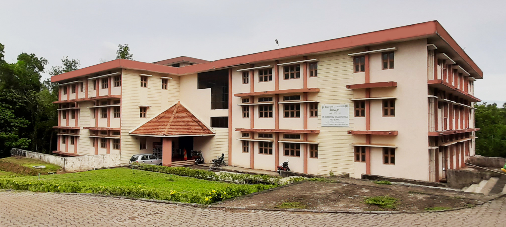

About Us
About our CollageShri Dharmasthala Manjunatheshwara Polytechnic, Ujire provides an opportunity for youngsters on this rural belt, deprive of higher technical education, to get themselves technically qualified and enhance their potential for seeking better placement and for those who can become entrepreneur in starting their own firm. Dr. D. Veerendra Heggade, Dharmadhikari at Sri Kshethra Dharmasthala and President of SDME Society, Ujire established this Institution in 2008. Since then under his able leadership Shri Dharmasthala Manjunatheshwara Polytechnic, Ujire has grown in the field of Technical Education. Shri Dharmasthala Manjunatheshwara Polytechnic is Managed by SDM Educational Society Ujire |
 |

|
SDME SocietyShri Dharmasthala Manjunatheshwara Educational [SDME] Society, Ujire® was established with the primary objective of making education accessible and affordable to the rural youth. With the hallmarked vision: Putting Value into Education, at present, it manages 56 educational institutions from Kindergarten to Doctoral Studies in the state of Karnataka in India. These institutions offer quality education in the fields of General, Law, Technical, Medical and Management Studies. These institutions ensure quality through updated skill sets and value based education. |
Our PresidentThe Dharmaadhikari of Shri Kshethra Dharmasthala, Dr. D. Veerendra Heggade is a multi-faceted personality who combines in him many roles. Being the head of a religious institution that draws millions, he is the dispenser of justice. The tradition of Chaturvida Daanaparampara (Four types of Charity: Annadana – Free Food, Vidya Daana – Free Education, Aushada Daana – Free Medicine and Healthcare and Abhaya Daana – Succor) finds greater meaning under his able administration of Shri Kshethra. As the president of SDM Educational Society, he is the guiding spirit and driving force behind the institution’s run. The Society under his guidance, runs more than 50 educational institutions – Kindergarten to the Doctoral studies – in the fields like Technical, Medical, Management Law and General Higher Education – across the state of Karnataka in India. He established Shri Kshethra Dharmasthala Rural Development Project (SKDRDP), which has transformed the hapless rural people into empowered individuals. Rural Development and Self Employment Training Institutes (RUDSETI) established nationwide by him have brought smiles on the faces of countless unemployed youth. Shri Dharmasthala Siri Gramodyoga Samsthe (SIRI), yet another social welfare organisation established by Dr Heggade, has provided a means of honourable existence to many rural people, especially women. Many awards and recognitions came in search of him for his untiring contributions to the welfare of the society. To name a few, he is the recipient of Ashden International Gold Award, London, which is also considered as the Green Oscar and Padma Vibhushan, the second highest civilian award in India. |
 |